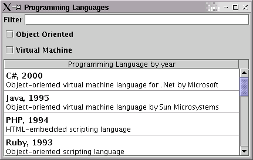

One of the most important features of Glazed Lists is that it works with dynamically changing data. If our data was not dynamic, problems like sorting would be trivial.
For many applications, the dynamic component of the data will come from using
the add() and remove() methods of BasicEventList. This
quickly becomes unmanageable when the source data comes from an external source.
It is difficult to decide what has changed, and unacceptable to clear the table
and then re-add all elements of an updated list. To solve this problem, Glazed Lists
uses a dynamically-sourced list.
DynamicQueryList is a list that you cannot directly add elements to.
Instead, you specify where the DynamicQueryList can find the elements, and it looks
them up. You also specify an interval at which the DynamicQueryList
should update itself.
The lookup is done by implementing the Query interface. The significant
method is doQuery(), which returns a SortedSet. This means
that objects using queries must implement the Comparable interface, and
it makes sense why. When the DynamicQueryList is comparing an updated objects
to the original list, it needs to map the old values to the new values. By performing this
step, updated objects are updated instead of being replaced. For example, on ListTable, this
means that the selection is preserved even if the selected object is updated.
For our programming language example, we're going to lookup our programming
languages from a JDBC database. The first step is to add Comparable to
our ProgrammingLanguage class.
|
Our query class needs to fetch a SortedSet of
ProgrammingLanguage objects. We'll be using JDBC for the example,
but it is not limited in how you find your objects. You could use EJB, SOAP,
local files or whatever your heart desires to lookup objects.
|
Now that we've created our query, it's time to replace our static
BasicEventList with something more dynamic. We create a new
DynamicQueryList with a refresh interval in milliseconds.
We then set the list to use our new query.
|
Now all that's left is to set up a sample database. I used my PostgreSQL database. The exciting thing here is that I can add rows to the database, and they propogate to the table. If the table is sorted or filtered, new rows show up where they are supposed to.

There are a few important things to know about DynamicQueryList:
PeriodicQueryList instead. That class
provides a TimerTask that can be added to any Timer thread.
setQuery()
method. When a different query is still running and you call setQuery(),
the running query will be interrupted. If you have a query that could run a long time, you
should periodically test Thread.interrupted() and throw an
InterruptedException if you have been interrupted. That will allow a
replacement query to continue.
| << Part 5 - Custom Renderers | Tutorial Home | Part 7 - JComboBox >> |
|---|